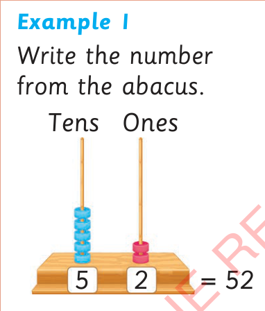
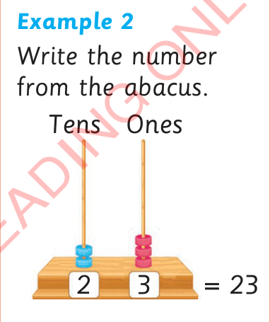

Writing numbers represented by an abacus
An abacus is used to represent numbers. It is also used to do basic arithmetic operations.

Example 1
Write the number from the abacus.
Tens
Ones
= 52

Example 2
Write the number from the abacus.
Tens
Ones
= 23